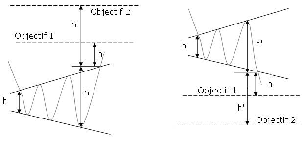
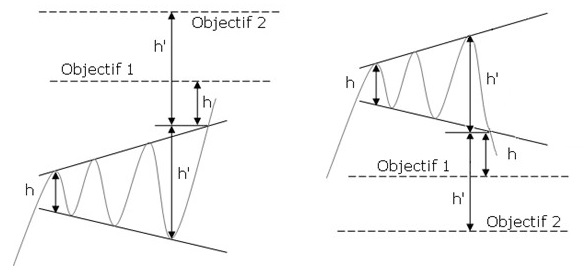

- Figures chartistes : L'Elargissement symétrique -
L’élargissement symétrique est une figure de retournement. La figure est formée par deux droites symétriques par l’horizontale qui sont divergentes. C’est donc un triangle symétrique inversé ou encore de triangle ouvert.
L’élargissement symétrique traduit de la nervosité croissante des investisseurs mais également de leur indécision. Si la figure n’est pas repérée rapidement, les mouvements peuvent paraitre totalement aléatoires et ainsi piéger de nombreux investisseurs.
L’objectif de cours est donné en reportant la hauteur du triangle à son début sur le point de cassure. Une autre technique consiste à reporter la hauteur maximale du triangle sur le point de cassure
Validité :
Chaque droite doit être touchée au moins deux fois pour être validée.
L'élargissement symétrique de creux

L'élargissement symétrique de sommet

58% il y a une sortie haussière
60% l’objectif de la figure est atteint en prenant la technique de la hauteur maximale du triangle. En cas de sortie baissière, le pourcentage augmente à 70%.
Plus de 78% des sorties baissières interviennent lorsque le cours se situe dans le cours se situe dans le tiers inférieur de son range annuel.
53% il y a une sortie haussière
75% l’objectif de la figure est atteint en prenant la technique de la hauteur maximale du triangle. En cas de sortie baissière, le pourcentage tombe à 64%.
Plus de 72% des sorties haussières interviennent lorsque le cours se situe dans le cours se situe dans le tiers supérieur de son range annuel.
Aucune cassure haussière n'a été constaté dans le tiers inférieur du range annuel de la valeur
- Figure d'indécision
- Potentiel baissier plus important que le potentiel haussier en cas de cassure ce qui est rare en analyse technique
- A partir de la 5ème rotation (c'est à dire 5 points de contact sur soit la résistance soit le support), il y a 80% de chance que la sortie s'effectue au prochain contact avec le support ou la résistance du triangle symétrique. A partir de la 6ème rotation, ce pourcentage s'élève à 90%.
- Figure d'indécision
- Le mouvement est plus important en cas de sortie par le haut
- A partir de la 5ème rotation (c'est à dire 5 points de contact sur soit la résistance soit le support), il y a 80% de chance que la sortie s'effectue au prochain contact avec le support ou la résistance du triangle symétrique. A partir de la 6ème rotation, ce pourcentage s'élève à 96%.